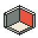
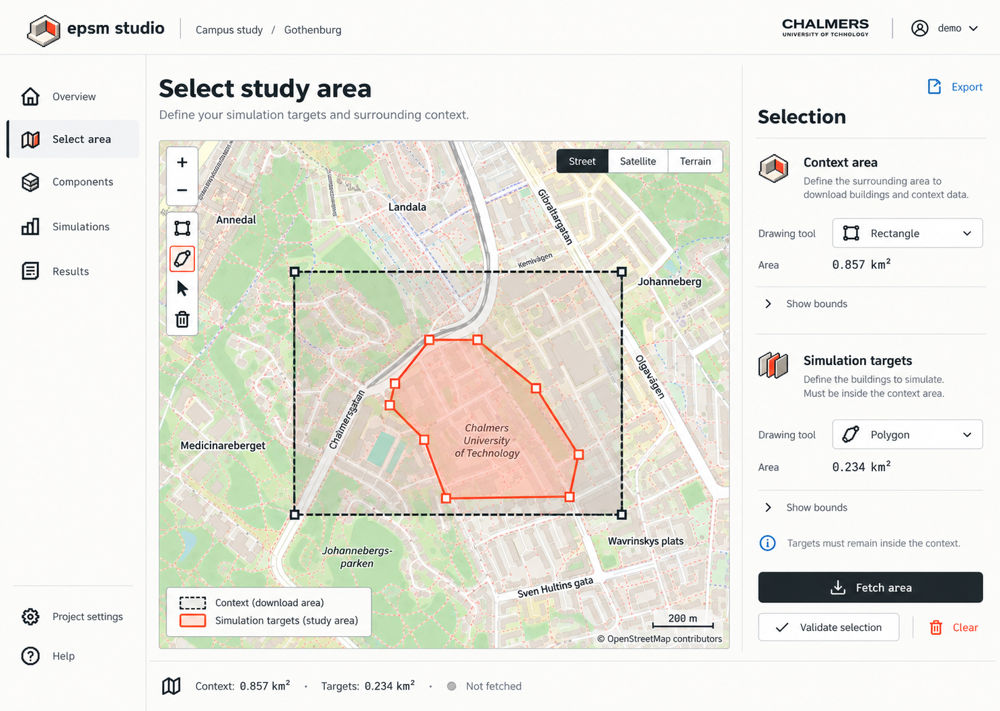
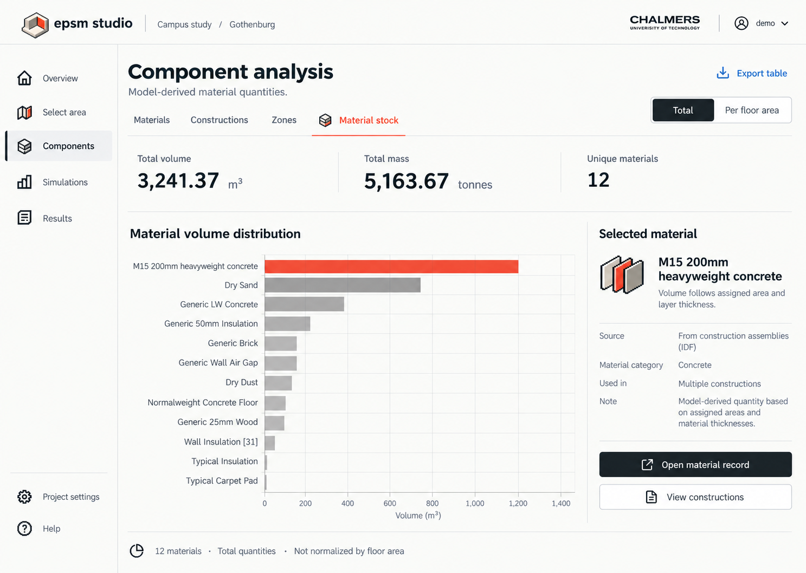
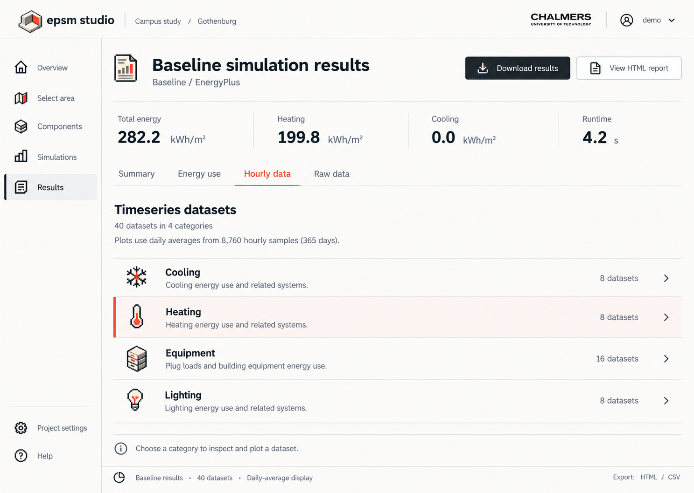

Modern workspace. Pixel character.
A readable light interface with a small, precise building at its centre. These working HTML examples use the actual local fonts, generated tokens and opt-in stylesheet. They do not call a server or run a simulation.

Near-white surfaces. Clear type. One active item in vermilion.
Colour with a job
Bright vermilion marks a selection. Dark red is used for readable small text. Light dividers separate groups; stronger borders identify controls.
Passed Geometry checks complete.
Missing input Choose weather before running.
Failed Inspect the retained run log.
Information Results describe the saved inputs.
Typography that stays readable
Inter for prose, headings and numeric tables. True italics are bundled. IBM Plex Mono for code and technical identifiers.
ÅÄÖ åäö · m² · m³ · CO₂ · μ · µ · °C
building_014 · epsm.scene/1 · ÅÄÖ åäö m² m³ CO₂ μ µ °C
Greek μ falls back from Plex Mono to bundled Inter. Preserve the actual unit symbol.
<link rel="stylesheet" href="tokens.css">
<link rel="stylesheet" href="theme.css">
<main class="epsm-pocket-cad">…</main>Controls and state
Try the form and view selector with a keyboard. The disabled action explains its missing prerequisite.
The current model keeps its physical assignments and explicit assumptions.
Source observations remain distinct from derived values and assumptions.
Loading, empty and failure messages
Loading records… Progress is shown only when known.
No materials match these filters. Change or clear the filters.
Run failed. Successful outputs and the failed attempt remain inspectable.
Twelve roles. One family.
Native 32-pixel grids, enlarged only by integer factors. Each icon names a responsibility.
Dark-background README keylines · same artwork, no dark UI theme
Show the quantity and its basis
Illustrative values below are taken from the supplied UI reference, not a new calculation.
- Total volume
- 3,241.37 m³
- Total mass
- 5,163.67 tonnes
- Materials
- 12
| Selection | Quantity | Energy (kWh/m²) | Origin |
|---|---|---|---|
| Heating | 199.8 | Simulated | |
| — | Cooling | 0.0 | Simulated |
Selected: Heating · 199.8 kWh/m².
Scientific provenance, execution state and physical fields keep their own labelled encodings. See the manual before applying an interface accent to a scientific plot.
Map overlays without colour dependence
This schematic demonstrates boundary styles, not a geographic basemap. No tiles or network requests are loaded.
Dashed: Context · Solid: Target · Red + casing: Selected
Target selected. Context and target roles are stored separately from styling.
Implementation prerequisite
The legacy area editor, retained in Git history, inferred some roles from colours. Give the new adapter stable feature IDs and explicit roles before adopting these presets. Casing and invalid hatches need renderer adapters; raster roads and labels cannot be individually styled through CSS.
Three reviewed reference screens
These are visual mockups. They do not imply that planned Studio features are implemented.





